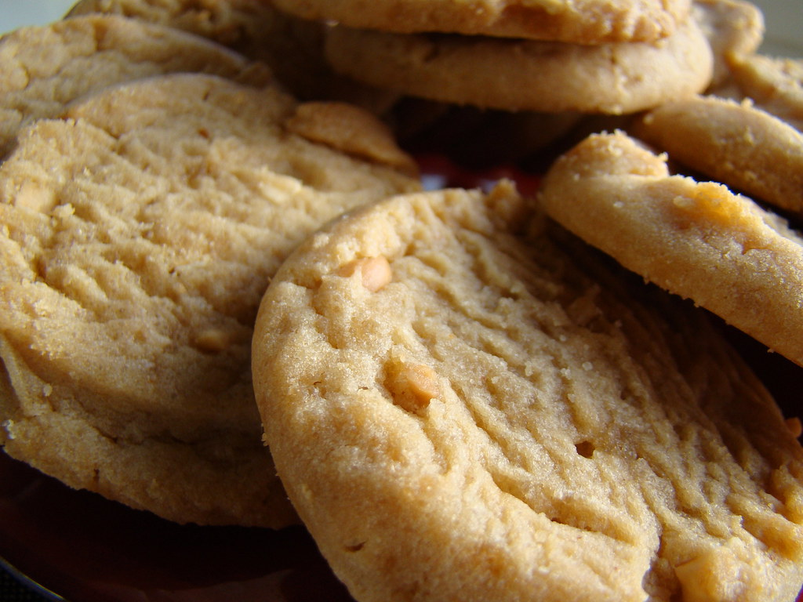

Peanut Butter Cookies

Description
Peanut butter cookies were popularized in the early 20th century for
their great affordibility during the Great Depression. They are sweet yet salty,
using the nutty flavor and soft, crumbly texture for a great dessert.
Ingredients
- 1 1/2 cup all-purpose flour
- 1/2 cup unsalted butter
- 1 cup peanut butter
- 1/2 cup brown sugar
- 1/2 cup sugar
- 1 tsp vanilla extract
- 1 large egg
- 3/4 tsp baking powder
- 1/4 tsp salt
Steps
- Preheat the oven to 350 degrees F
- Sift flour and baking powder, then whisk and combine in a bowl
- Cream butter and sugars, then adding salt
- Add peanut butter and mix until incorporated
- Mix in egg and vanilla extract, and then add flour mixture and mix
- Roll dough into 1-in balls and place on baking sheet with parchment paper
- Flatten cookies with a fork in a criss-cross pattern
- Bake cookies for about 10 minutes
- Allow cookies to cool, then enjoy!